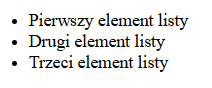

Listy HTML
https://juniortoexpert.com/wp-content/webp-express/webp-images/uploads/html-listing-tags.png.webp
Listy są w brew pozorom bardzo ważnym elementem języka, który należy dobrze opanować, nie służa tylko do tworzenia list, ale także np. nawigacji na stronie.
Potrzebne znaczniki
<ul> - znacznik do tworzenia listy nie uporządkowanej (ang. unordered list) - idealny przykład znacznika kontenerowego
<li> - znacznik do tworzenia elementów listy (ang. list item)
<ol> - znacznik do tworzenia listy uporządkowanej (ang. ordered list)
<dl> - znacznik do tworzenia listy definicji (ang. definition list)
<dt> - znacznik do tworzenia terminu definicji (ang. definition term)
<dd> - znacznik do tworzenia opisu definicji(ang. definition description)Głównie używany jest znacznik <ul>, używa się go jako znacznika domyślnego, którego później stylizuje się css-em, znacznika <ol> używa się do tworzenia list zagnieżdzonych, czyli list w elementach <li>, Natomiast najrzadziej używanymi listami są listy definicji.
Jak zrobić prostą listę
Aby utworzyć listę używamy znacznika <ul>, a w nim znaczników <li>, tak jak w zamieszczonym kodzie.
<ul>
<li>Pierwszy element listy</li>
<li>Drugi element listy</li>
<li>Trzeci element listy</li>
</ul>Otrzymujemy coś takiego:
Jak zrobić listę zagnieżdżoną
Aby stworzyć listę zagnieżdżona umieszczamy znacznik <ol> w jednym ze znaczników <li> listy.
<ul>
<li>Pierwszy element listy</li>
<li>
<ol>
<li> Pierwszy element listy zagnieżdżonej</li>
<li>Drugi element listy zagnieżdżonej </li>
<li> Trzeci element listy zagnieżdżonej</li>
</ol></li>
<li>Trzeci element listy</li>
</ul>Efekt: